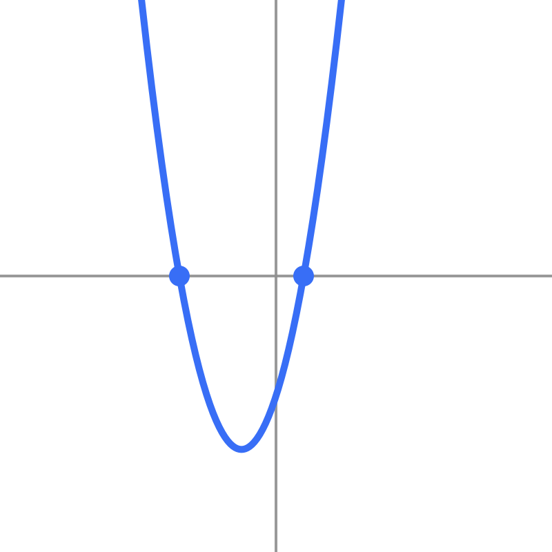
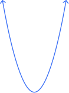

Write your name & answers on a sheet of paper.
$$(x+7)(x-2)=0$$What are the real zeroes?
By the Zero Product Property, we get \( x=-7, 2\).
Sketch the graph. (Does not need to be to scale.)

polynomial: type of expression with “many terms” separated by \(+\) and \(-\)
degree: the highest power on the variable
linear: polynomial of degree 1
quadratic: polynomial of degree 2
vertex: \((1,-4)\)
y-intercept: \( (0,-3)\)
parabola opens up
\(x\)
\(y\)

vertex: \((-2,5)\)
y-intercept: \( (0,1)\)
parabola opens down
\(x\)
\(y\)
What patterns do you notice between
the equation and the graph?
What patterns do you notice between
the equation and the graph?
What patterns do you notice between
the equation and the graph?
a parabola is the U-shaped graph that a quadratic makes
the vertex is the maximum or minimum of the parabola
the axis of symmetry is the vertical line that splits a parabola into perfectly symmetrical halves
How can we pull the vertex out of the equation?
x-offset sign FLIPS!
y-offset sign does NOT flip
Calculate the y-intercept. \((0,-3)\)
The parabola opens up because... \(a=1\) is positive
How can we pull the vertex out of the equation?
x-offset sign FLIPS!
y-offset sign does NOT flip
Calculate the y-intercept. \((0,1)\)
The parabola opens down because... \(a=-1\) is negative (vertical flip)
Good for: identifying vertex
Good for: seeing everything (expanded)
Good for: identifying real zeroes
Factoring: Method 3(ish)
The Goal: go from ABC to vertex form by adding/subtracting “\(0\)”
\( x^2 + 4x+3\)
\(=\)
\(x\)
\(1\)
\(1\)
\(x\)
\( x^2\)
\( x\)
\( x\)
\(1\)
\( x\)
\( 1\)
\( 1\)
\(1\)
\( x\)
\( 1\)
\( 1\)
\( -1\)
\( =\)
\( (x+2)^2 {\color{#d10808}\phantom{.}-\phantom{.} 1}\)
Identify \(a\), \(b\), and \(c\)
\(0 = x^2 + 2x + 2\)
Calculate \(h=b/2a\)
\( h = 2/(2\cdot 1) = \)\(1\)
Add AND subtract \(h^2\) from one side (add “\(0\)”)
\( 0= x^2 + 2x\)\(+1\)\(-1\)\(+2\)
Change \(ax^2+bx+h\) into the squared form
\( 0 = (x+1)^2 \)\(-1\)\(+2\)
Simplify
\( 0 = (x+1)^2+1 \)
Complete the square.
\( f(x)=x^2-2x-3\)
\( =(x - 1)^2 - 2 \)
\( f(x)=-x^2-4x+1\)
\(= -(x + 2)^2 - 5 \)
Identify \(a\), \(b\), and \(c\)
Calculate \(h=-b/2a\)
Calculate \(k\) by plugging \(h\) into the ABC form
Plug \(a\), \(h\), and \(k\) into vertex form
Plot and label the vertex in the correct quadrant
It does not need to be to scale! Do not draw a bunch of tick marks. Labeling the point with an ordered pair is enough.
Plot and label the y-intercept
ABC: at \( (0,c) \)
Vertex: plug in \(x=0\) and solve
Connect points with a parabola
Check that the way it opens matches the sign of \(a\)!
Write \(f(x)\) in vertex form.
\(f(x)= -3(x + 101)^2 - 397 \)
Sketch the graph, with labeled vertex and intercepts.
Write \(f(x)\) in vertex form.
\(f(x)= 4(x -75)^2 +10 \)
Sketch the graph, with labeled vertex and intercepts.
-> 2.4 homework